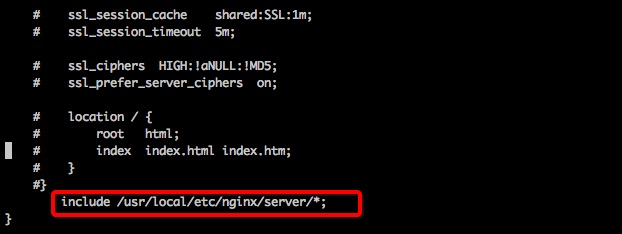
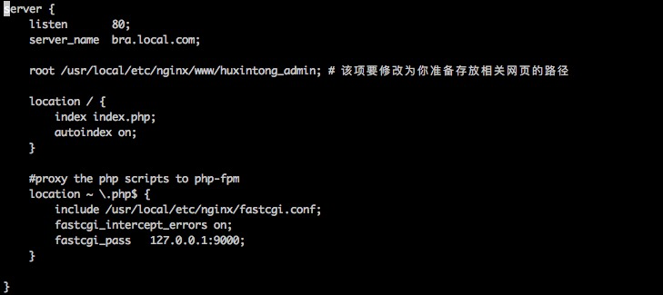
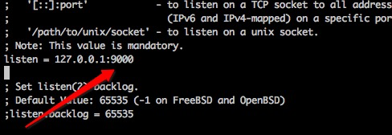
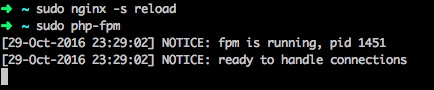
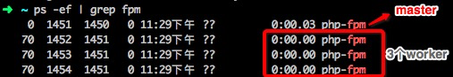
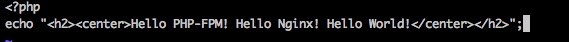
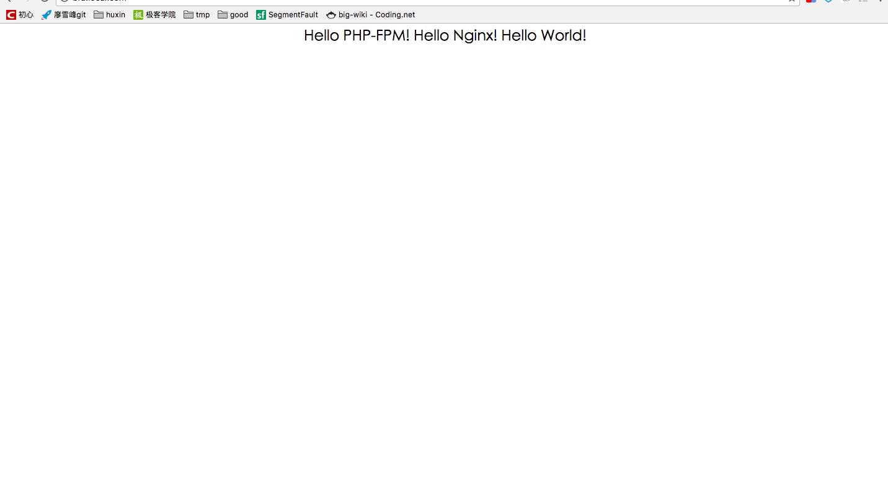

Nginx ("engine x") 是一个高性能的HTTP和反向代理服务器，也是一个IMAP/POP3/SMTP服务器。
早期的webserver只处理html等静态文件，但是随着技术的发展，出现了像php等动态语言。
webserver处理不了了，怎么办呢？那就交给php解释器来处理吧！
交给php解释器处理很好，但是，php解释器如何与webserver进行通信呢？
为了解决不同的语言解释器(如php、python解释器)与webserver的通信，于是出现了cgi协议。只要你按照cgi协议去编写程序，就能实现语言解释器与webwerver的通信。如php-cgi程序。
有了cgi协议，解决了php解释器与webserver通信的问题，webserver终于可以处理动态语言了。
但是，webserver每收到一个请求，都会去fork一个cgi进程，请求结束再kill掉这个进程。这样有10000个请求，就需要fork、kill php-cgi进程10000次。
有没有发现很浪费资源？
于是，出现了cgi的改良版本，fast-cgi。fast-cgi每次处理完请求后，不会kill掉这个进程，而是保留这个进程，使这个进程可以一次处理多个请求。这样每次就不用重新fork一个进程了，大大提高了效率。
php-fpm即php-Fastcgi Process Manager.
php-fpm是 FastCGI 的实现，并提供了进程管理的功能。
进程包含 master 进程和 worker 进程两种进程。
master 进程只有一个，负责监听端口，接收来自 Web Server 的请求，而 worker 进程则一般有多个(具体数量根据实际需要配置)，每个进程内部都嵌入了一个 PHP 解释器，是 PHP 代码真正执行的地方。
我们知道Nginx不只有处理http请求的功能，还能做反向代理。
故Nginx通过反向代理功能将动态请求转向后端Php-fpm。
下面我们来配置一个全新的Nginx+Php-fpm
进入nginx目录下，编辑 nginx.conf文件。
如图，在nginx.conf最后一行，添加include文件

进入上面include的路径，添加一个server.

下面我们解释一下配置项的含义：
server { listen 80; #监听80端口，接收http请求
server_name www.example.com; #就是网站地址
root /usr/local/etc/nginx/www/huxintong_admin; # 准备存放代码工程的路径
#路由到网站根目录www.example.com时候的处理
location / { index index.php; #跳转到www.example.com/index.php
autoindex on;
}
#当请求网站下php文件的时候，反向代理到php-fpm
location ~ \.php$ { include /usr/local/etc/nginx/fastcgi.conf; #加载nginx的fastcgi模块
fastcgi_intercept_errors on; fastcgi_pass 127.0.0.1:9000; #nginx fastcgi进程监听的IP地址和端口
}
}总而言之：当我们访问www.example.com的时候，处理流程是这样的：
www.example.com
|
|
Nginx
|
|
路由到www.example.com/index.php
|
|
加载nginx的fast-cgi模块
|
|
fast-cgi监听127.0.0.1:9000地址
|
|
www.example.com/index.php请求到达127.0.0.1:9000
|
|
等待处理。。。下面我们启用php的php-fpm来处理这个请求
打开php-fpm.conf文件，我们看到如下配置：

即:php-fpm模块监听127.0.0.1:9000端口，等待请求到来去处理。
nginx与php-fpm的结合，完整的流程是这样的。
nginx与php-fpm的结合，完整的流程是这样的。
www.example.com
|
|
Nginx
|
|
路由到www.example.com/index.php
|
|
加载nginx的fast-cgi模块
|
|
fast-cgi监听127.0.0.1:9000地址 .
|
|
www.example.com/index.php请求到达127.0.0.1:9000
|
|
php-fpm 监听127.0.0.1:9000
|
|
php-fpm 接收到请求，启用worker进程处理请求
|
|
php-fpm 处理完请求，返回给nginx
|
|
nginx将结果通过http返回给浏览器
启动成功，我们查看php-fpm进程

如上图，有一个master进程，3个worker进程。
我们编辑文件如下图：


转载于：https://blog.csdn.net/zjuwangleicn/article/details/79300347